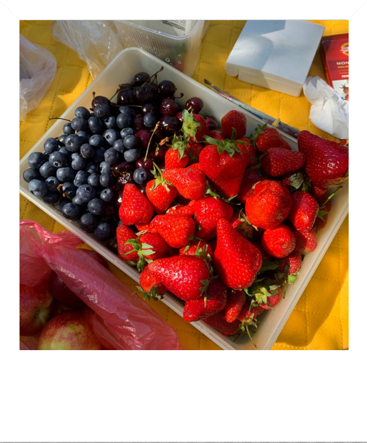
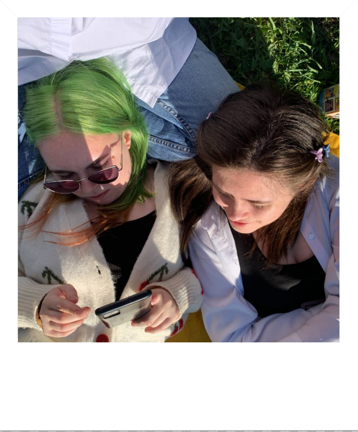
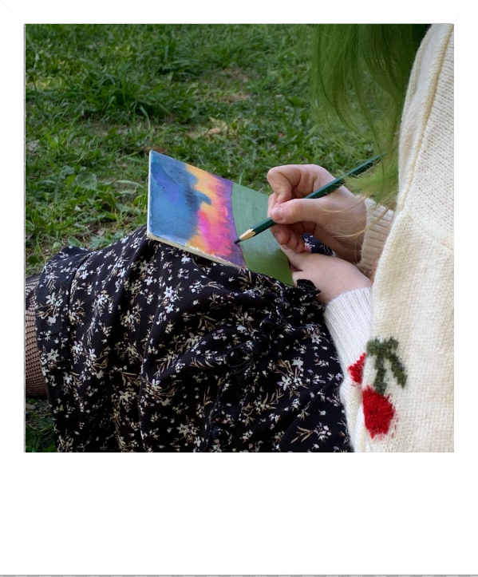
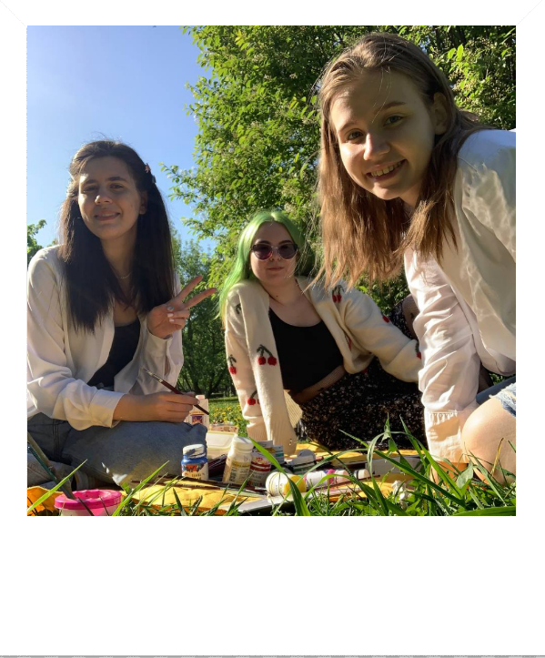

5 причин полюбить пикники этим летом




Пикники поднимают настроение
Известно, что время на природе помогает восстанавливать силы, гармонизировать свое состояние и получить новые впечатления. Если есть желание и возможность, можно собрать свой идеальный комплект для пикника: с красивой корзинкой, скатертью, посудой, бумажными флажками и фонариками, которые можно повесить на деревья. Все это не так сложно и дорого, а впечатление от вроде бы обычного события остается грандиозное!
Для пикника не нужна компания
Пикник подходит для того, чтобы стать вашим личным временем, которое вы посвящаете только себе. Это может быть завтрак перед работой, вариант для перерыва на обед или возможность расслабиться после трудного дня. Нечем заняться в выходной? Собираете перекус, берете плед, книгу и идете в парк — и вот у вас уже практически кинематографичный досуг. Организовать красивый и вкусный пикник — важная практика заботы о самой себе.
Пикник может стать поводом встретиться с друзьями
Обычно с возрастом к пикникам относятся скептически: зачем все это «студенческое» неудобство, когда можно «как взрослые люди» посидеть в ресторане. Но правильно организованный пикник может стать выдающимся событием для всех участников. Выберите тему: кухню одного из народов мира, стиль одного времени (например, 30-х годов) для одежды, посуды и блюд или любимый в вашей компании фильм. Либо совместите пикник с катанием на лодках, игрой в волейбол или поездкой в усадьбу замечательного писателя. Наверняка все это окажется более захватывающим опытом, чем очередные посиделки в общепите.
Пикники полезны
За счет приятных эмоций, свежего воздуха и физической активности (наверняка так вы сделаете больше движений, чем при перекусе дома или в кафе) пикники полезны не только для настроения, но и для здоровья. Особенно если вы выберете в качестве угощения овощные палочки с йогуртовым соусом, легкие салаты, сэндвичи на цельнозерновом хлебе, домашние блины или оладьи. Если пикник проходит в ясную погоду, важно позаботиться о том, чтобы вы были защищены от прямых лучей солнца: тенью дерева, тентом и/или солнцезащитным кремом. Заправка витамином D обеспечена!
Пикники доступны всем
Если вы ограничены в расходах или просто приняли решение больше откладывать и меньше тратить, пикники могут стать универсальным сценарием для приятно проведенного времени. Приготовить пару бутербродов, простой пирог и салат из сезонных овощей недорого и несложно. Точно так же с локацией: не все могут поехать за город, но найти парк, зеленый сквер или хотя бы раскидистое дерево со скамейкой в городе по силам каждому. Даже если вы закованы в бетонное пространство офиса, 15 минут обеденного перерыва на свежем воздухе рядом с зеленой клумбой наверняка принесут больше удовольствия, чем ланч в столовой.
Скачать
Успейте скачать чек лист для пикника
 Главная
Лепка
Велосипеды
Пикник
Главная
Лепка
Велосипеды
Пикник